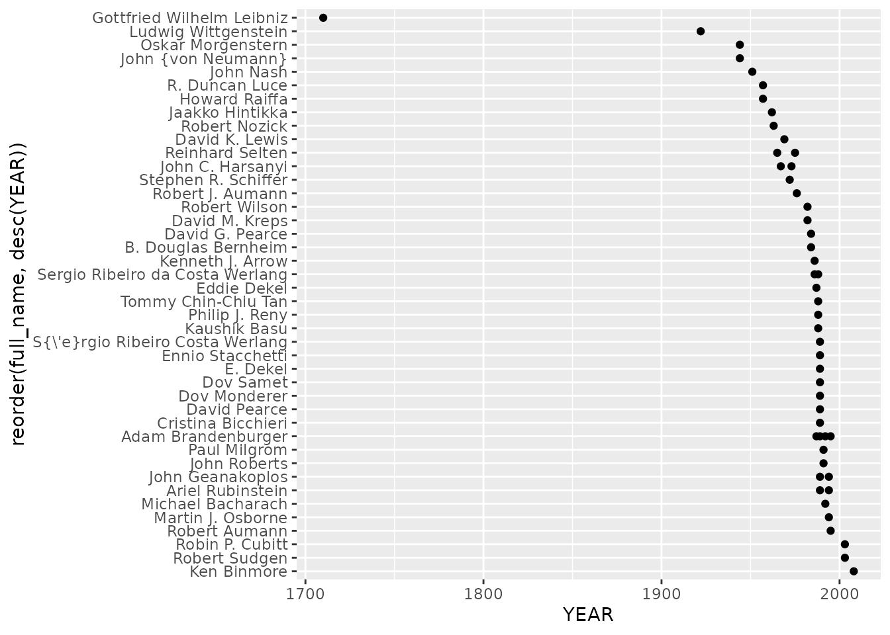

bib2df - Parse a BibTeX file to a data.frame
Philipp Ottolinger
2024-03-26
Source:vignettes/bib2df.Rmd
bib2df.RmdBibTeX
BibTeX is typically used together with LaTeX to manage references. The BibTeX file format is simple as it follows rather simple but strict rules and represents a reference’s core data as a list of partly mandatory fields.
The resulting BibTeX file can tell much about the work you use it for, may it be an academic paper, a dissertation or any other report that at least partly appoints to the work of others. The average age of the referenced works might tell if one addresses to a current topic or if one digs into the history of a certain field. Does one cite many works of just a few authors or occurs every author at most once? The BibTeX file is definitely able to answer these questions.
Why bib2df?
As mentioned above, BibTeX represents the entries as lists of named fields, some kind of similar to the JSON format. If you want to gain insights from your BibTeX file using R, you will have to transform the data to fit into a more usual data structure. Such a data structure, speaking of R, is the tibble. bib2df does exactly this: It takes a BibTeX file and parses it into a tibble so you can work with your bibliographic data just the way you do with other data.
Given this tibble you can manipulate entries in a familiar way and write the updated references back to a valid BibTeX file.
How to use
Parse the BibTeX file
To parse a BibTeX file to a tibble you may want to use the function bib2df(). The first argument of bib2df() is the path to the file you want to parse.
install.packages("bib2df")
library(bib2df)
path <- system.file("extdata", "LiteratureOnCommonKnowledgeInGameTheory.bib", package = "bib2df")
df <- bib2df(path)
df## # A tibble: 37 × 27
## CATEGORY BIBTEXKEY ADDRESS ANNOTE AUTHOR BOOKTITLE CHAPTER CROSSREF EDITION
## <chr> <chr> <chr> <chr> <list> <chr> <chr> <chr> <chr>
## 1 ARTICLE Arrow1986 NA NA <chr> NA NA NA NA
## 2 ARTICLE AumannBr… NA NA <chr> NA NA NA NA
## 3 ARTICLE Aumann19… NA NA <chr> NA NA NA NA
## 4 INCOLLECT… Bacharac… Cambri… NA <chr> Knowledg… 17 NA NA
## 5 ARTICLE Basu1988 NA NA <chr> NA NA NA NA
## 6 ARTICLE Bernheim… NA NA <chr> NA NA NA NA
## 7 ARTICLE Bicchier… NA NA <chr> NA NA NA NA
## 8 ARTICLE Binmore2… NA NA <chr> NA NA NA NA
## 9 ARTICLE Brandenb… NA NA <chr> NA NA NA NA
## 10 INCOLLECT… Brandenb… New Yo… NA <chr> The Econ… 3 NA NA
## # ℹ 27 more rows
## # ℹ 18 more variables: EDITOR <list>, HOWPUBLISHED <chr>, INSTITUTION <chr>,
## # JOURNAL <chr>, KEY <chr>, MONTH <chr>, NOTE <chr>, NUMBER <chr>,
## # ORGANIZATION <chr>, PAGES <chr>, PUBLISHER <chr>, SCHOOL <chr>,
## # SERIES <chr>, TITLE <chr>, TYPE <chr>, VOLUME <chr>, YEAR <dbl>, DOI <chr>bib2df() returns a tibble with each row representing one entry of the initial BibTeX file while the columns hold the data originally stored in the named fields. If a field was not present in a particular entry, the respective column gets the value NA. As some works can be the work of multiple authors or editors, these fields are converted to a list to avoid having the names of multiple persons concatenated to a single character string:
head(df$AUTHOR)## [[1]]
## [1] "Arrow, Kenneth J."
##
## [[2]]
## [1] "Aumann, Robert" "Brandenburger, Adam"
##
## [[3]]
## [1] "Aumann, Robert J."
##
## [[4]]
## [1] "Bacharach, Michael"
##
## [[5]]
## [1] "Basu, Kaushik"
##
## [[6]]
## [1] "Bernheim, B. Douglas"The second argument of bib2df() is separate_names and calls, if TRUE, the functionality of the humaniformat 1 package to automatically split persons’ names into pieces:
## [[1]]
## salutation first_name middle_name last_name suffix full_name
## 1 <NA> Kenneth J. Arrow <NA> Kenneth J. Arrow
##
## [[2]]
## salutation first_name middle_name last_name suffix full_name
## 1 <NA> Robert <NA> Aumann <NA> Robert Aumann
## 2 <NA> Adam <NA> Brandenburger <NA> Adam Brandenburger
##
## [[3]]
## salutation first_name middle_name last_name suffix full_name
## 1 <NA> Robert J. Aumann <NA> Robert J. Aumann
##
## [[4]]
## salutation first_name middle_name last_name suffix full_name
## 1 <NA> Michael <NA> Bacharach <NA> Michael Bacharach
##
## [[5]]
## salutation first_name middle_name last_name suffix full_name
## 1 <NA> Kaushik <NA> Basu <NA> Kaushik Basu
##
## [[6]]
## salutation first_name middle_name last_name suffix full_name
## 1 <NA> B. Douglas Bernheim <NA> B. Douglas BernheimParsing multiple BibTex files
Multiple BibTeX files can be parsed using lapply(). The paths to the BibTeX files must be stored in a vector. Using this vector to call bib2df() within lapply() results in a list of tibble, which can be bound, e.g. using bind_rows():
bib1 <- system.file("extdata", "LiteratureOnCommonKnowledgeInGameTheory.bib", package = "bib2df")
bib2 <- system.file("extdata", "r.bib", package = "bib2df")
paths <- c(bib1, bib2)
x <- lapply(paths, bib2df)
class(x)## [1] "list"
head(x)## [[1]]
## # A tibble: 37 × 27
## CATEGORY BIBTEXKEY ADDRESS ANNOTE AUTHOR BOOKTITLE CHAPTER CROSSREF EDITION
## <chr> <chr> <chr> <chr> <list> <chr> <chr> <chr> <chr>
## 1 ARTICLE Arrow1986 NA NA <chr> NA NA NA NA
## 2 ARTICLE AumannBr… NA NA <chr> NA NA NA NA
## 3 ARTICLE Aumann19… NA NA <chr> NA NA NA NA
## 4 INCOLLECT… Bacharac… Cambri… NA <chr> Knowledg… 17 NA NA
## 5 ARTICLE Basu1988 NA NA <chr> NA NA NA NA
## 6 ARTICLE Bernheim… NA NA <chr> NA NA NA NA
## 7 ARTICLE Bicchier… NA NA <chr> NA NA NA NA
## 8 ARTICLE Binmore2… NA NA <chr> NA NA NA NA
## 9 ARTICLE Brandenb… NA NA <chr> NA NA NA NA
## 10 INCOLLECT… Brandenb… New Yo… NA <chr> The Econ… 3 NA NA
## # ℹ 27 more rows
## # ℹ 18 more variables: EDITOR <list>, HOWPUBLISHED <chr>, INSTITUTION <chr>,
## # JOURNAL <chr>, KEY <chr>, MONTH <chr>, NOTE <chr>, NUMBER <chr>,
## # ORGANIZATION <chr>, PAGES <chr>, PUBLISHER <chr>, SCHOOL <chr>,
## # SERIES <chr>, TITLE <chr>, TYPE <chr>, VOLUME <chr>, YEAR <dbl>, DOI <chr>
##
## [[2]]
## # A tibble: 1 × 27
## CATEGORY BIBTEXKEY ADDRESS ANNOTE AUTHOR BOOKTITLE CHAPTER CROSSREF EDITION
## <chr> <chr> <chr> <chr> <list> <chr> <chr> <chr> <chr>
## 1 MANUAL NA Vienna, A… NA <chr> NA NA NA NA
## # ℹ 18 more variables: EDITOR <list>, HOWPUBLISHED <chr>, INSTITUTION <chr>,
## # JOURNAL <chr>, KEY <chr>, MONTH <chr>, NOTE <chr>, NUMBER <chr>,
## # ORGANIZATION <chr>, PAGES <chr>, PUBLISHER <chr>, SCHOOL <chr>,
## # SERIES <chr>, TITLE <chr>, TYPE <chr>, VOLUME <chr>, YEAR <dbl>, URL <chr>## [1] "tbl_df" "tbl" "data.frame"
head(res)## # A tibble: 6 × 28
## CATEGORY BIBTEXKEY ADDRESS ANNOTE AUTHOR BOOKTITLE CHAPTER CROSSREF EDITION
## <chr> <chr> <chr> <chr> <list> <chr> <chr> <chr> <chr>
## 1 ARTICLE Arrow1986 NA NA <chr> NA NA NA NA
## 2 ARTICLE AumannBr… NA NA <chr> NA NA NA NA
## 3 ARTICLE Aumann19… NA NA <chr> NA NA NA NA
## 4 INCOLLECTI… Bacharac… Cambri… NA <chr> Knowledg… 17 NA NA
## 5 ARTICLE Basu1988 NA NA <chr> NA NA NA NA
## 6 ARTICLE Bernheim… NA NA <chr> NA NA NA NA
## # ℹ 19 more variables: EDITOR <list>, HOWPUBLISHED <chr>, INSTITUTION <chr>,
## # JOURNAL <chr>, KEY <chr>, MONTH <chr>, NOTE <chr>, NUMBER <chr>,
## # ORGANIZATION <chr>, PAGES <chr>, PUBLISHER <chr>, SCHOOL <chr>,
## # SERIES <chr>, TITLE <chr>, TYPE <chr>, VOLUME <chr>, YEAR <dbl>, DOI <chr>,
## # URL <chr>Analyze and visualize your references
Since the BibTeX entries are now converted to rows and columns in a tibble, one can start to analyze and visualize the data with common tools like ggplot2, dplyr and tidyr.
For example, one can ask which journal is cited most among the references
library(dplyr)
library(ggplot2)
library(tidyr)
df %>%
filter(!is.na(JOURNAL)) %>%
group_by(JOURNAL) %>%
summarize(n = n()) %>%
arrange(desc(n)) %>%
slice(1:3)## # A tibble: 3 × 2
## JOURNAL n
## <chr> <int>
## 1 Econometrica 4
## 2 Games and Economic Behavior 2
## 3 International Journal of Game Theory 2or what the median age of the cited works is:
## # A tibble: 1 × 1
## m
## <dbl>
## 1 31Also plotting is possible:
df %>%
select(YEAR, AUTHOR) %>%
unnest() %>%
ggplot() +
aes(x = YEAR, y = reorder(full_name, desc(YEAR))) +
geom_point()
Manipulate your references
Since all the BibTeX entries are represented by rows in a tibble, manipulating the BibTeX entries is now easily possible.
One of the authors of the 10th reference in our file does not have his full first name:
df$AUTHOR[[10]]## salutation first_name middle_name last_name suffix full_name
## 1 <NA> Adam <NA> Brandenburger <NA> Adam Brandenburger
## 2 <NA> E. <NA> Dekel <NA> E. DekelThe ‘E.’ in ‘E. Dekel’ is for Eddie, so lets change the value of that field:
df$AUTHOR[[10]]$first_name[2] <- "Eddie"
df$AUTHOR[[10]]$full_name[2] <- "Eddie Dekel"
df$AUTHOR[[10]]## salutation first_name middle_name last_name suffix full_name
## 1 <NA> Adam <NA> Brandenburger <NA> Adam Brandenburger
## 2 <NA> Eddie <NA> Dekel <NA> Eddie DekelWrite back to BibTeX
Especially when single values of the parsed BibTeX file were changed it is useful to write the parsed tibble back to a valid BibTeX file one can use in combination with LaTeX. Just like bib2df() parses a BibTeX file, df2bib() writes a BibTeX file:
The just written BibTeX file of course contains the values, we just changed in the tibble:
@Incollection{BrandenburgerDekel1989,
Address = {New York},
Author = {Brandenburger, Adam and Dekel, Eddie},
Booktitle = {The Economics of Missing Markets, Information and Games},
Chapter = {3},
Pages = {46 - 61},
Publisher = {Oxford University Press},
Title = {The Role of Common Knowledge Assumptions in Game Theory},
Year = {1989}
}To append BibTeX entries to an existing file use append = TRUE within df2bib().